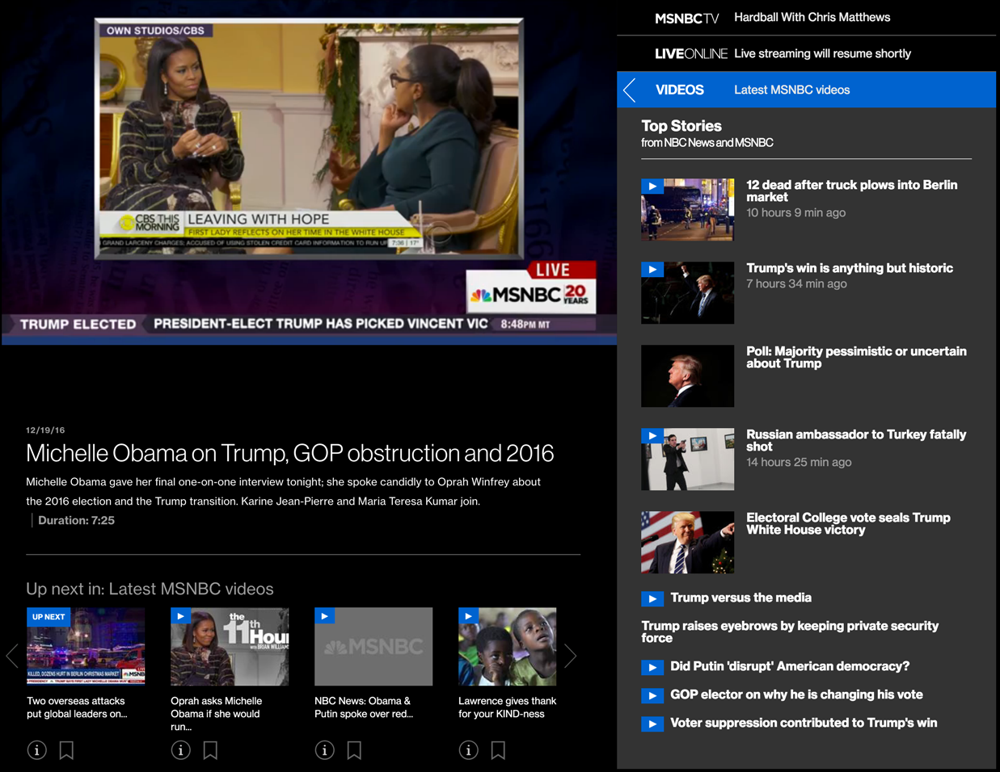

Prototyping and Front-End Development
In 2014, I developed the initial prototype for the new online video section of MSNBC. My main task was in iterating through various working interface protypes, suggesting and implementing UI features. I was involved in the entire life cycle of the site, from ideation to launch. 
The driving concept for the interface was continuous video consumption, while exposing community engagement features and related news stories. A detailed case study is available on the Lullabot.com site.